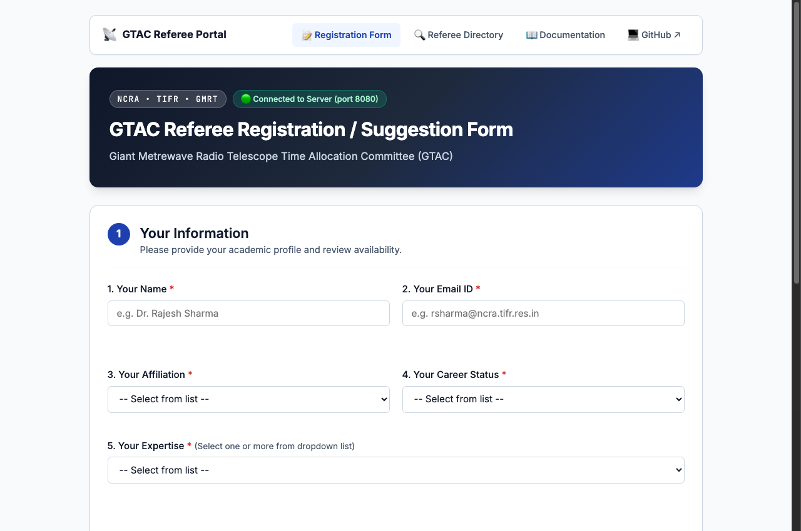
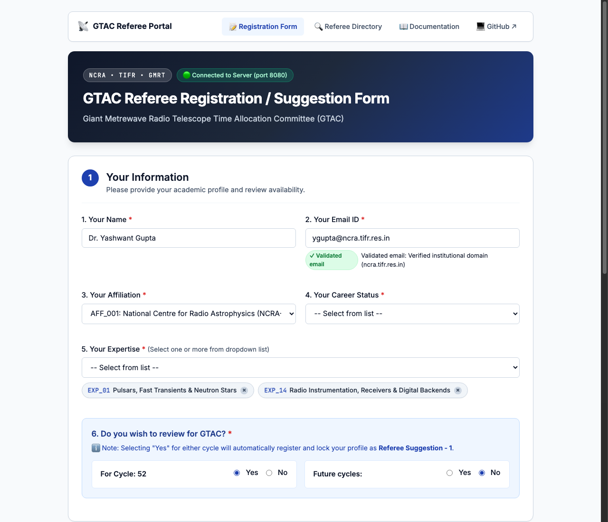
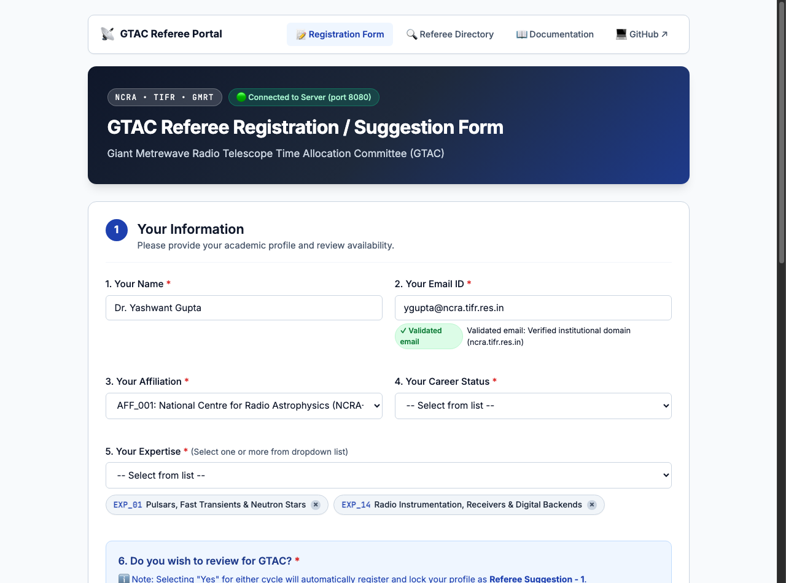
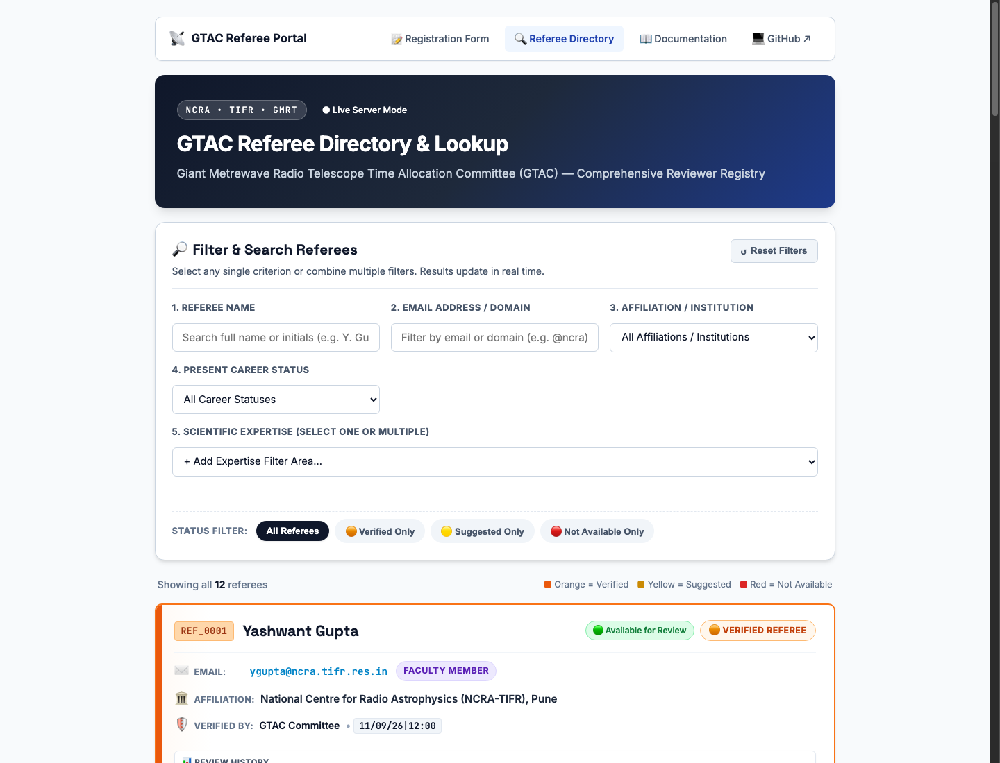
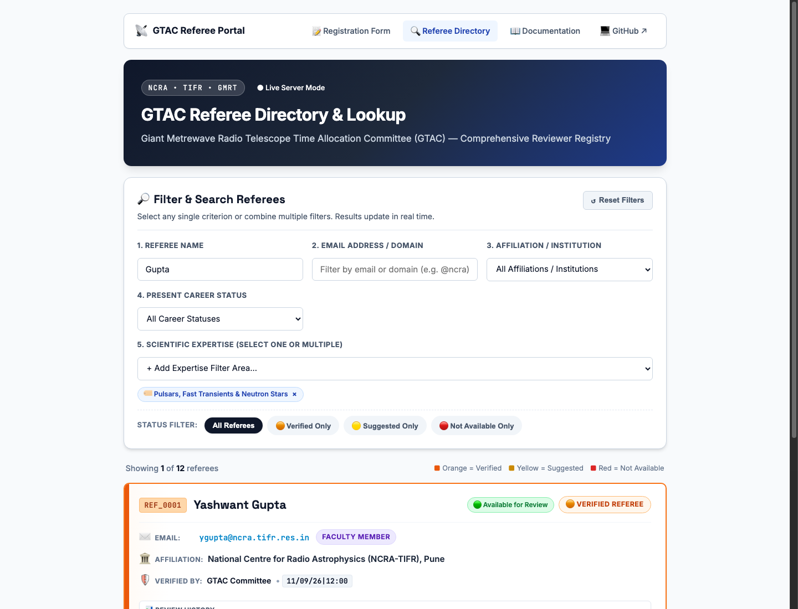
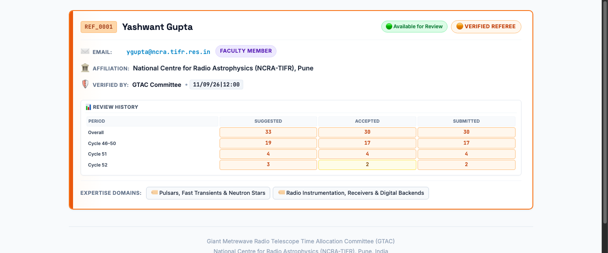
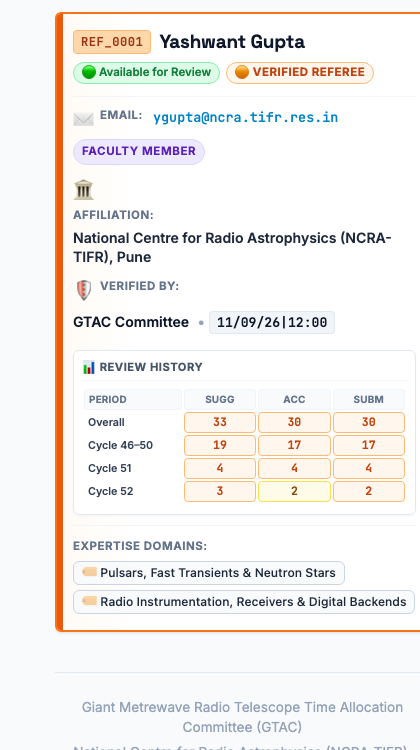

GTAC Referee Registration & Suggestion System
A dedicated, zero-dependency peer-review intake and referee registry built for the Giant Metrewave Radio Telescope Time Allocation Committee (GTAC). The system facilitates seamless volunteer registration, peer reviewer recommendations, institutional verification, and real-time database indexing.
Dynamic Web Form
Interactive HTML5 interface supporting submitter profiling, dynamic "+ Others" taxonomy expansion, and sequential referee cards.
ASCII & CSV Database
Transparent, version-controllable plain-text database system pairing human-readable pipe-delimited taxonomies with structured CSV registries.
Gemini AI Validation
Automatic real-time validation of names and emails by default, displaying "Validated email" badges while preserving 100% field editability.
CLI & Dual-Mode
Robust Python CLI (`util`) providing built-in HTTP server, automated semantic versioning, git management, and offline `file://` execution.
System Architecture
The system is organized into modular layers with zero external binary or npm dependencies, running entirely on standard modern browsers and Python 3:
┌────────────────────────────────────────────────────────────────────────┐
│ FRONTEND CLIENT (dev/) │
│ • index.html : Responsive UI with GTAC Theme & Modern Badges │
│ • style.css : Flexbox/Grid CSS with Dark Add-Bar & Dialogs │
│ • app.js : State, Auto-Validation, Autocomplete & Sync │
│ • db_data.js : Pre-bundled Dataset for Offline/file:// Support │
└──────────────────────────────────┬─────────────────────────────────────┘
│ HTTP REST API or file://
▼
┌────────────────────────────────────────────────────────────────────────┐
│ BACKEND SERVER (dev/server.py) │
│ • GET /api/database : Delivers Affiliations, Exp, Referees │
│ • GET /api/cycle : Reads cycle dynamically from cycle.txt│
│ • GET /api/referees/lookup : Half-initials & Substring matching │
│ • POST /api/gemini-validate : Validates academic credentials & email│
│ • POST /api/submit : Allocates IDs & Appends to disk files │
└──────────────────────────────────┬─────────────────────────────────────┘
│ Direct File I/O
▼
┌────────────────────────────────────────────────────────────────────────┐
│ DATABASE STORE (database/) │
│ • cycle.txt : Current GTAC Proposal Cycle (e.g. 52) │
│ • affiliations.txt : Pipe-delimited (AFF_XXX | Institution)│
│ • expertise.txt : Pipe-delimited (EXP_XX | Domain) │
│ • career_status.txt : Pipe-delimited (CAR_XX | Stage) │
│ • Referee_database_A.csv : Primary Registry of all GTAC Referees │
│ • form_submissions.csv : Immutable Audit Log of Submissions │
└────────────────────────────────────────────────────────────────────────┘Quick Start
You can run and interact with the application using either of two supported operating modes:
Live Server Mode (Recommended for Full Database Disk I/O)
Start the lightweight local server using the built-in management CLI:
./util --serve 8080Open http://localhost:8080 in your browser. All form submissions, new affiliations, and custom expertise entries are immediately written to disk files.
Standalone Offline Mode (Direct Browser Double-Click)
Double-click index.html directly in your operating system's file manager (opening under the file:// protocol).
The application automatically detects the offline environment and instantly mounts the complete embedded database from dev/db_data.js with local session persistence.
📸 Application Screenshots & Visual Walkthrough
Real-time high-resolution operational captures of the GTAC Referee Registration and Suggestion platform, illustrating key user flows, auto-validation, and referee directory lookups.
1. Submitter Intake & Profile Configuration
The primary registration interface captures submitter identity, dynamically loads institutional taxonomies, and displays the active GTAC proposal cycle.

2. Gemini AI Validation & Review Volunteering
Entering an institutional email triggers real-time credential validation. Selecting review willingness dynamically links the submitter's profile to Block 1.

3. Dynamic Referee Cards & Sequential Add-Bar
Reviewer suggestions are entered via distinct cards. Block 1 mirrors the submitter while subsequent cards allow peer recommendations, followed by the dark sequential add-bar.

4. Ordered Post-Submission Summary
Upon submission, a clean modal presents an ordered, human-readable summary of the submission metadata and assigned referee IDs without leaking internal file storage paths.

5. Referee Directory & Live Lookup
The public Referee Directory (referees.html) displays reviewers in rectangular cards color-coded by status (Orange: Verified, Yellow: Suggested, Red: Unavailable).

6. Real-Time Multi-Criteria Filtering
Reviewers can be queried instantly across Name, Email, Affiliation, Career Status, and Multi-Select Expertise tags.

7. Referee Card & Review History Table
Each referee card renders a Review History table in the white space under the status badges, tracking Suggested, Accepted, and Submitted metrics across Overall, Cycle A–B (46–50), Cycle C (51), and active Cycle D (52) with yellow, orange, and red performance cells.

8. Mobile Phone Responsive Layout
When viewed on mobile smartphones or when the browser window width is shrunk, referee cards dynamically adapt with optimized padding, text wrapping, and compact table headers (Sugg, Acc, Subm), preventing any clipping or horizontal overflow.

Referee Directory & Lookup System
The platform includes a dedicated, responsive directory page at referees.html (alias /lookup) designed for committee members, administrators, and researchers to browse, filter, and inspect the referee registry.
| Feature | Specification |
|---|---|
| Interactive Selection Form | Top-mounted filter card supporting Name search (substring + half-initials), Email domain filter, Affiliation dropdown, Career Status dropdown, and scientific Expertise multi-select tags. |
| Human-Readable Values | All database IDs (AFF_001, CAR_04, EXP_01;EXP_14) are automatically mapped to full institutional titles, career stages, and scientific discipline chips. |
| Rectangular Row Blocks | Referees are displayed as clean rectangular cards in sequential row order with distinct typography for Name (Space Grotesk), ID & Email (JetBrains Mono), and Affiliation (Inter). |
| Status Color Coding |
🟠 Orange for Verified Referees (available) 🟡 Yellow for Suggested Referees (available) 🔴 Red for Not Available Referees (unavailable this cycle) |
| Nominator Attribution & Timestamp | Each card displays who suggested or verified the reviewer (e.g. Prasun Dutta or GTAC Committee) with a structured timestamp formatted as DD/MM/YY|HH:MM. |
Gemini AI Auto-Validation & "Validated Email"
To maintain high data quality, the system automatically checks referee credentials against Gemini AI by default as soon as the user enters a Name or Email.
- Syntax & Domain Verification: Verifies standard RFC email formatting and verifies whether the domain belongs to recognized astrophysics research centres (e.g., NCRA-TIFR, IUCAA, RRI, IISc, TIFR, IIA, PRL, ARIES, etc.) or academic TLDs (
.res.in,.ac.in,.edu,.mpg.de). - "Validated email" Notice: Displays a distinct green pill ✓ Validated email directly underneath the email field with confirmation details.
- Always Editable: Unlike strict locking systems, the form never disables or locks inputs into a read-only state. Reviewer names, emails, and affiliations remain completely editable at all times.
Title Stripping Protocol
Honorific prefixes (Dr, Dr., Prof, Prof., Professor, Mr, Ms, Mrs, Shri, Smt) are automatically removed prior to database insertion.
This ensures uniform sorting, prevents duplicate database entries, and allows consistent alphabetical indexing (e.g., Prof. Yashwant Gupta → Yashwant Gupta).
Half-Initials Matching
Researchers are often cited using initials instead of full first names. The GTAC matching engine performs fuzzy half-initials resolution:
| Input Name Formats | Target Database Record | Resolution Status |
|---|---|---|
Y. Gupta, Y Gupta, Gupta, Y. |
Yashwant Gupta (REF_0001) |
Matched |
J. Chengalur, Prof. J. Chengalur |
Jayaram Chengalur (REF_0002) |
Matched |
P. Dutta, Prasun Dutta |
Prasun Dutta (REF_0011) |
Matched |
A. Gupta |
Yashwant Gupta (REF_0001) |
Mismatch (Safe) |
Submitter Self-Entry Preference
If the submitter volunteers to review proposals (Question 6 = Yes), Block 1 is designated as their own profile. Submitter entries in Section 1 maintain absolute authority and will never be overwritten by database lookup results. When saving, their current profile updates their database record authoritatively.
Dual-Mode Compatibility Matrix
| Feature | Live Server Mode (http://) |
Standalone File Mode (file://) |
|---|---|---|
| Database Source | Live disk ASCII & CSV files | Embedded db_data.js |
| Persistence | Permanent disk write | Browser localStorage |
| Gemini Check | Live API or Backend Heuristics | Client Heuristics |
| CORS / Load Failed | Zero errors (Local HTTP) | Zero errors (Inline bundle) |
🚀 Production Deployment & Central Database Setup Options
Currently, the web form on GitHub Pages runs as a high-performance static client that securely verifies credentials and records user submissions in the visitor's local browser session (localStorage). To collect all proposal submissions and referee registrations into a single authoritative central database from anywhere in the world, choose from the following production setup architectures:
Option 1: NCRA / Institute Server (Recommended)
Deploy the zero-dependency Python server (server.py) directly on an internal or public NCRA-TIFR virtual machine or Linux server.
- Run
python3 dev/server.py 8080undersystemdorsupervisord. - Configure Nginx reverse proxy with SSL:
https://gtac-ref.ncra.tifr.res.in. - Submissions write directly to authoritative CSV files on institutional storage.
Option 2: Cloud Container Hosting (Render / Railway)
Deploy the backend to a cloud hosting platform running a persistent volume for the database/ directory.
- Zero config Python deployment on Render, Railway, or PythonAnywhere.
- Docker support:
docker run -p 8080:8080 -v ./database:/app/database gtac_ref. - Provides automatic HTTPS and global edge routing.
Option 3: GTAC Secretariat Email & JSON Dispatch
Enable direct email or file export for proposal submitters without hosting any public backend server.
- Submitter receives a clean downloadable
submission_SUB_XXXX.jsonupon form completion. - Pre-formatted "Email to GTAC Secretariat" button launches user's email client addressed to
gtac@ncra.tifr.res.in. - Zero infrastructure costs, maximum privacy, and manual committee audit.
Option 4: GitHub Actions & Webhook Automation
Connect form submissions to a lightweight webhook (or GitHub Repository Dispatch / Issue creation).
- Form posts payload to a GitHub Actions webhook or serverless endpoint.
- GitHub Action automatically commits new rows into
Referee_database_A.csv. - Maintains full Git audit trail for every submitted recommendation.
In
dev/app.js, configure the backend endpoint constant:const API_BASE_URL = window.location.hostname === 'localhost' ? '' : 'https://gtac-ref.ncra.tifr.res.in';